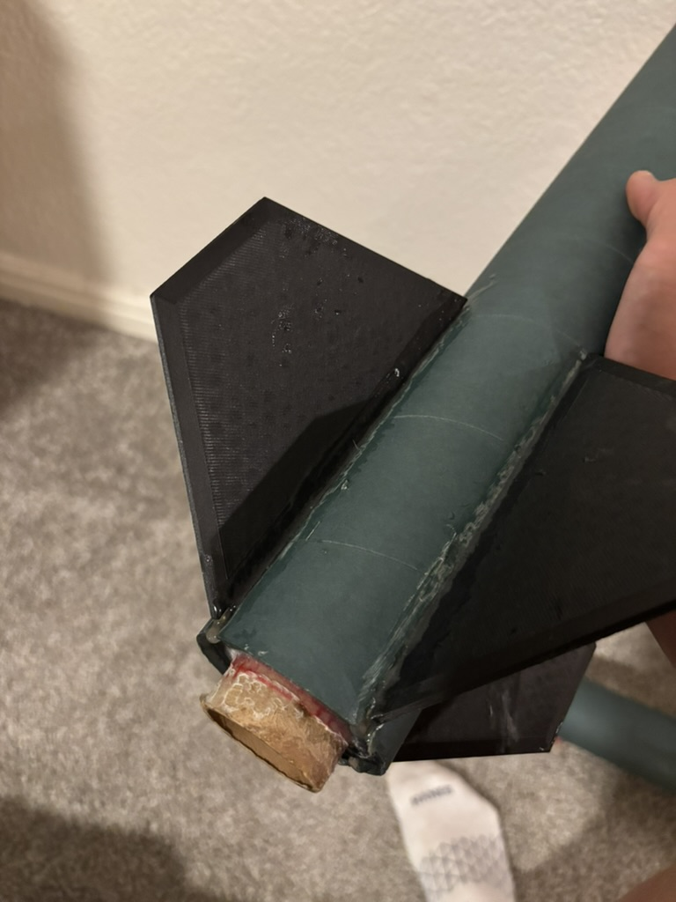

Cutting Clean Through-the-Wall Fin Slots
Method
Fabrication
Summer 2026
Objective
Cut fin slots into the airframe that are straight, evenly spaced, and free of tear-out. Slot alignment translates directly into fin alignment — crooked slots produce crooked fins and induced roll or instability in flight.
Method
- Printed a slot guide sized to fit around the body tube.
- Secured the guide to the body tube with duct tape.
- Drilled a hole at the end of each slot, using the guide to locate them.
- Cut down the slots with the Dremel, following the guide edges.

Printed cutting jig taped to the body tube.
Tooling
| Tool / material | Role |
|---|
| Printed slot guide | Sets slot position and spacing around the tube |
| Duct tape | Holds the guide in place on the body tube |
| Drill | Hole at each slot end to define its length |
| Dremel | Cuts the slots along the guide edges |
Conclusion
Printing a guide that wraps the body tube let us position and cut all the slots consistently without measuring and marking each one by hand. The end holes kept every cut to length and gave clean slot ends.
Adhesive Selection: Structural vs. High-Heat Bonds
Materials
Summer 2026
Objective
Match each bonded joint to the right adhesive. Airframe structure needs a tough, gap-filling bond; the motor-retainer zone near the nozzle sees high heat that most structural epoxies are not rated to hold.
Approach
Use a toughened structural epoxy for all airframe bonds, thickened only when a fillet needs to hold its shape. Reserve a high-heat metal epoxy strictly for the metal-to-metal zone at the motor nozzle.
Selection
| Joint | Adhesive | Reason |
|---|
| Centering rings, bulkheads | Aeropoxy ES6209 | Toughened structural bond; works well on Blue Tube and plywood |
| Fillets that must hold shape | ES6209 + glass microballoons | Raises viscosity so fillets don't sag before cure |
| Retainer base ↔ motor tube (nozzle zone) | JB Weld | Tolerates high sustained heat, metal-to-metal |

Fin fillets laid with structural epoxy.
Note: Microballoons raise viscosity but reduce bond strength if overused. Add only the minimum needed for the fillet to hold its shape. Adhesive temperature ratings vary by product — confirm service temps on the manufacturer datasheet for your specific epoxy before relying on them.
3D-Printing Structural Components
Materials
3D Printing
Summer 2026
Objective
Produce the load-bearing structural parts of the airframe in-house on the 3D printer instead of cutting them from sheet stock, and confirm the printed parts held their geometry through assembly.
What We Printed
| Part | Role |
|---|
| Nose Cone | Essential for aerodynamics, expensive outside of 3D printing |
| Centering rings | Align and bond the motor mount tube inside the airframe |
| Fins | Printed rather than cut from sheet stock |
Conclusion
Printing the thrust ring, centering rings, and fins let us fabricate every structural component ourselves with consistent, repeatable geometry — no sheet material or laser cutter needed, and quick to reprint if a part needed adjusting.